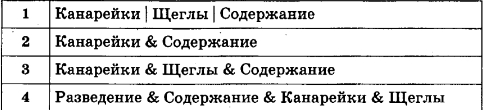
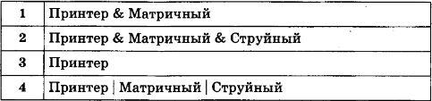
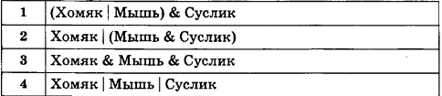
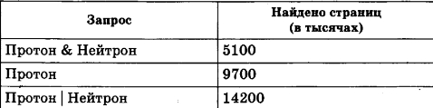
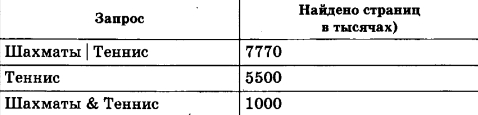

| 1 | В таблице приведены запросы к поисковому серверу. Расположите обозначения запро- сов в порядке возрастания количества страниц, которые найдёт поисковый сервер по каждому запросу. Для обозначения логической операции «ИЛИ» в запросе используется символ |, а для логической операции «И» - символ &.  | |||
| 1) Канарейки | Щеглы | Содержание | 2) Канарейки & Содержание | 3) Канарейки & Щеглы & Содержание | 4) Разведение & Содержание & Канарейки & Щеглы | |
| 2 | В таблице приведены запросы к поисковому серверу. Расположите обозначения запросов в порядке возрастания количества страниц, которые найдёт поисковый сервер по каждому запросу. Для обозначения логической операции «ИЛИ» в запросе используется символ |, а для логической операции «И» - символ &.  | |||
| 1) Принтер & Матричный | 2) Принтер & Матричный & Струйный | 3) Принтер | 4) Принтер | Матричный | Струйный | |
| 3 | В таблице приведены запросы к поисковому серверу. Расположите обозначения запросов в порядке возрастания количества страниц, которые найдёт поисковый сервер по каждому запросу. Для обозначения логической операции «ИЛИ» в запросе используется символ |, а для логической операции «И» - символ &.  | |||
| 1) "(Хомяк | Мышь) & Суслик" | 2) Хомяк | (Мышь & Суслик) | 3) Хомяк & Мышь & Суслик | 4) Хомяк | Мышь | Суслик | |
| 4 | В языке запросов поискового сервера для обозначения логической операции «ИЛИ» используется символ «|», а для логической операции «И» - символ «&». В таблице приведены запросы и количество найденных по ним страниц некоторого сегмента сети Интернет. Какое количество страниц (в тысячах) будет найдено по запросу Нейтрон? Считается, что все запросы выполнялись практически одновременно, так что набор страниц, содержащих все искомые слова, не изменялся за время выполнения запросов.  | |||
| 5 | В языке запросов поискового сервера для обозначения логической операции «ИЛИ» используется символ «|», а для логической операции «И» - символ «&». В таблице приведены запросы и количество найденных по ним страниц некоторого сегмента сети Интернет. Какое количество страниц (в тысячах) будет найдено по запросу Нейтрон? Считается, что все запросы выполнялись практически одновременно, так что набор страниц, содержащих все искомые слова, не изменялся за время выполнения запросов.  | |||
Разработчик: Соловейкина Милена